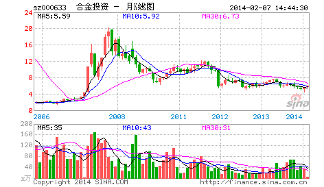

喜欢吹牛皮的，在市场里最常见，例如一种以分析市场、吹牛皮为生的职业，叫什么股评、专家的。此类人不过是市场上的寄生虫，真正的猎手只会观察、操作，用嘴是打不了豺狼的。
市场就是一个狩猎场，首先你要成为一个好猎手，而一个猎手，首先要习惯于无言。如果真有什么真理，那真理也是无言的。可言说的，都不过是人类思想的分泌物，臭气熏天。真不可言说了，就无不可言，言而无言，是乃真言。
一个好的猎手，可以没有嘴巴，但一定会有一双不为外物所动的眼睛，在这眼睛下，一切如幻化般透明。要不被外物所动，则首先要不被自我所迷惑，其实无所谓外物、自我，都不过幻化空花，如此，方可从容其中。
猎手只关心猎物，猎物不是分析而得的。猎物不是你所想到的，而是你看到的。相信你的眼睛，不要相信你的脑筋，更不要让你的脑筋动了你的眼睛。被脑筋所动的眼睛充满了成见，而所有的成见都不过对应着把你引向那最终陷阱的诱饵。猎手并不畏惧陷阱，猎手只是看着猎物不断地、以不同方式却共同结果地掉入各类陷阱，这里无所谓分析，只是看和干！
猎手的好坏不是基于其能说出多少道道来，而是其置于其地的直觉。好的猎手不看而看，心物相通，如果不明白这一点，最简单就是把你一个人扔到深山里，只要你能活着出来，就大概能知道一点了。如果觉得这有点残忍，那就到市场中来，这里有无数的虎豹豺狼，用你的眼睛去看，用你的心去感受，而不是用你的耳朵去听流言蜚语，用你的脑筋去抽筋！
（待续）